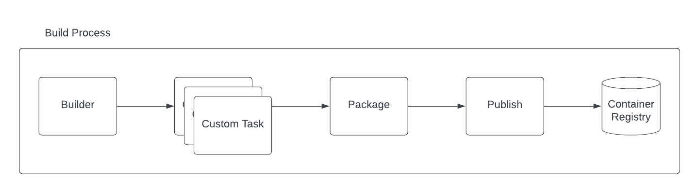

Build Pipeline
In Camel K version 1 we used to have 2 static tasks: builder and publisher (named after the strategy adopted, ie, spectrum). Now you can include any further task in the middle by opportunely configuring the Build. Here a diagram illustrating the pipeline:

We have 3 tasks which are required by Camel K to perform a build and provide a container image which will be used to start a Camel application. The build is a Maven process which is in charge to create a maven project based on the Integration sources provided. Then, after the Maven project is created and compiled, you can add any custom task (see section below). With this part we are introducing that level of flexibility required to accommodate any company build process. This part is optional, by default, Camel K does not need any custom task.
In reality we do make use of the custom task in one particular situation. In order to build a Quarkus Native image, the quarkus trait influences the builder in order to include a custom task which takes care of executing the native image compilation. But this is completely hidden to the final user.
Once the build and any customization are over, the package task takes care to prepare the context later required by the publishing operations. Basically this task is in charge to copy all artifacts and also prepare a Dockerfile which could be used eventually by the rest of the process. Finally, the publish task is in charge to generate and push the container to the registry using all the artifacts generated in the package task.
Add custom user tasks
As you have seen, the final user can include any optional task after a build operation is performed. We think this is the best moment when any custom operation can be performed as it is the immediate step after the Maven project is generated. And ideally, the context of any custom operation is the project.
Please, notice that, since the customization may require any tool not available in the operator container, you will need to run any additional task using builder pod strategy. |
Let’s see an example:
spec:
tasks:
- builder:
...
- custom:
command: tree
image: alpine
name: custom1
- custom:
command: cat maven/pom.xml
image: alpine
name: custom2
- spectrum:
...The custom tasks will be executed in the directory where the Camel K runtime Maven project was generated. In this example we’re creating 2 tasks to retrieve certain values from the project just for the scope of illustrating the feature. For each task you need to specify a name, the container image which you want to use to run and the command to execute.
The goal is to let the user perform custom tasks which may result in a success or a failure. If the task executed results in a failure, then, the entire build is stopped and fails accordingly.
Configuring via builder trait
We are aware that configuring the Build type directly is something that the majority of users won’t do. For this reason we’re enabling the same feature in the Builder trait.
Maintaining the example above as a reference, configuring a custom task will be as easy as adding a trait property when running your Integration, for instance, via CLI:
kamel run Test.java -t builder.tasks=custom1;alpine;tree -t builder.tasks="custom2;alpine;cat maven/pom.xml"Another interesting configuration you can provide via Builder trait is the (Kubernetes requests and limits. Each of the task you are providing in the pipeline, can be configured with the proper resource settings. You can use, for instance the -t builder.request-cpu <task-name>:1000m to configure the container executed by the task-name. This configuration works for all the tasks including builder, package and the publishing ones.
Getting task execution status
Altough the main goal of this custom task execution is to have a success/failure result, we thought it could be useful to get the log of each task to be consulted by the user. For this reason, you will be able to read it directly in the Build type. See the following example:
conditions:
- lastTransitionTime: "2023-05-19T09:56:02Z"
lastUpdateTime: "2023-05-19T09:56:02Z"
message: |
...
{"level":"info","ts":1684490148.080175,"logger":"camel-k.builder","msg":"base image: eclipse-temurin:11"}
{"level":"info","ts":1684490148.0801787,"logger":"camel-k.builder","msg":"resolved base image: eclipse-temurin:11"}
reason: Completed (0)
status: "True"
type: Container builder succeeded
- lastTransitionTime: "2023-05-19T09:56:02Z"
lastUpdateTime: "2023-05-19T09:56:02Z"
message: |2
│ │ ├── org.slf4j.slf4j-api-1.7.36.jar
│ │ └── org.yaml.snakeyaml-1.33.jar
│ ├── quarkus
│ │ ├── generated-bytecode.jar
│ │ └── quarkus-application.dat
│ ├── quarkus-app-dependencies.txt
│ └── quarkus-run.jar
└── quarkus-artifact.properties
21 directories, 294 files
reason: Completed (0)
status: "True"
type: Container custom1 succeeded
- lastTransitionTime: "2023-05-19T09:56:02Z"
lastUpdateTime: "2023-05-19T09:56:02Z"
message: |2-
</properties>
</configuration>
</execution>
</executions>
<dependencies></dependencies>
</plugin>
</plugins>
<extensions></extensions>
</build>
</project>
reason: Completed (0)
status: "True"
type: Container custom2 succeeded
- lastTransitionTime: "2023-05-19T09:56:02Z"
lastUpdateTime: "2023-05-19T09:56:02Z"
message: |
...test-29ce59bf-178f-4c4f-9d12-407461533e2a/camel-k-kit-chjkf0vkglls73fhp9lg:339751: digest: sha256:62d184a112327221e5cac6bea862fc71341f3fc684f5060d1e137b4b7635db06 size: 1085"}
reason: Completed (0)
status: "True"
type: Container spectrum succeededGiven the limited space we can use in a Kubernetes custom resource, we are truncating such log to the last lines of execution. One good strategy could be to leverage reason where we provide the execution status code (0, if success) and use an error code for each different exceptional situation you want to handle.
If for any reason you still need to access the entire log of the execution, you can always access to the log of the builder Pod and the specific container that was executed, ie kubectl logs camel-k-kit-chj2gpi9rcoc73cjfv2g-builder -c task1 -p
Custom tasks examples
As we are using container registry for execution, you will be able to execute virtually any kind of task. You can provide your own container with tools required by your company or use any one available in the OSS.
As the target of the execution is the project, before the artifact is published to the registry, you can execute any task to validate the project. We can think of any vulnerability tool scanner, quality of code or any other action you tipically perform in your build pipeline.